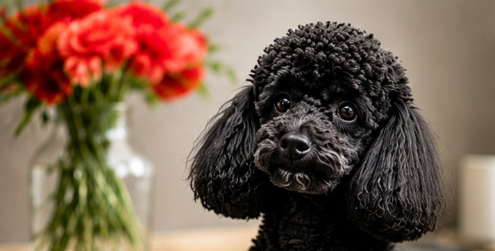
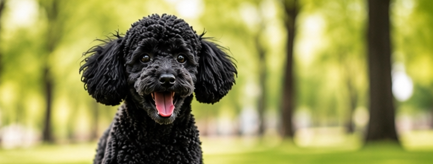
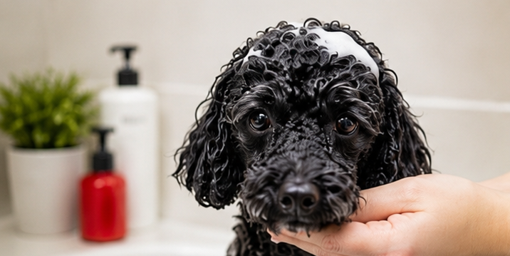

About
Charm
黒プードルの魅力

黒プードルの最大の魅力は、光の当たり方によって表情を変える、深く艶やかな黒い被毛です。 全身が黒で統一された姿には、かわいらしさだけでなく、上品で落ち着いた美しさがあります。 ふわふわとした巻き毛に包まれた姿は、まるで黒いぬいぐるみのようです。
被毛が黒いからこそ、明るく輝く瞳や鼻、舌を出したときの表情がより印象的に見えます。 一見するとクールで大人っぽく見えますが、実際には表情や仕草がとても豊かです。 首をかしげたり、飼い主をじっと見つめたり、楽しそうに走り回ったりと、 日常の何気ない動きにもたくさんの愛らしさがあります。
また、黒プードルは服や首輪などの色が映えやすいことも魅力のひとつです。 赤や白などのはっきりした色はもちろん、淡い色や柄物も黒い被毛によく似合います。 カットスタイルによっても印象が大きく変わり、丸みのあるテディベアカットではかわいらしく、 顔まわりをすっきり整える、いわゆる顔バリでは上品で洗練された雰囲気になります。
プードルは、もともと水辺で鳥猟を手伝っていた歴史を持つ犬種です。 現在も人なつこく陽気で忠実な性格や、毛が比較的抜けにくく飼いやすい点から、 長年人気の高い犬種として親しまれています。
Personality
性格と暮らし

プードルは、賢く人とのコミュニケーションを好む犬種です。 飼い主の表情や声の調子をよく観察し、生活の流れや家庭内のルールを少しずつ覚えていきます。 教えたことを理解するのが比較的早いため、基本的なしつけだけでなく、 おもちゃの名前を覚えたり、簡単な芸を身につけたりすることも得意です。
一方で、賢いからこそ退屈を感じやすい面もあります。 毎日長時間遊ばなければならないというわけではありませんが、 短い時間でも飼い主としっかり向き合うことが大切です。 知育玩具やおやつ探しなど、頭を使う遊びを取り入れることもおすすめです。
性格には個体差があり、明るく活発な子、甘えん坊な子、少し慎重な子など、 それぞれに異なる個性があります。 人が好きでも犬との交流は苦手だったり、家族には甘える一方で、 知らない人には警戒したりする場合もあります。 「プードルだから必ず社交的」と決めつけず、その子の性格やペースを尊重することが大切です。
飼い主との距離が近くなりやすい犬種であるため、常に一緒にいる生活が続くと、 留守番を不安に感じるようになることもあります。 子犬の頃から短時間の留守番を経験させ、 一人で落ち着いて過ごす練習をしておくと安心です。
また、プードルは周囲の音や人の動きに敏感で、物音に反応して吠えることがあります。 吠えたときに毎回大きな声で叱るのではなく、 静かにできた瞬間を褒めたり、別の行動に誘導したりしながら、 落ち着いて教えることが重要です。
毎日の暮らしでは、運動、遊び、休息のバランスを整えることが大切です。 滑りやすい床は足腰への負担になりやすいため、マットやカーペットを敷くと安心です。 ソファやベッドから何度も飛び降りる生活も膝や関節への負担につながるため、 ペット用ステップを設置するなどの工夫が役立ちます。
Coat
被毛のお手入れ

プードルの被毛は細かくカールしており、伸び続けるという特徴があります。 抜けた毛が巻き毛の中にとどまりやすいため、床に落ちる抜け毛は比較的少ないですが、 抜け毛がまったくないわけではありません。 絡まった毛を放置すると毛玉になりやすいため、日頃からのお手入れが欠かせません。
特に毛玉ができやすいのは、耳の後ろ、首輪やハーネスが当たる部分、 脇の下、内股、足先、しっぽの付け根などです。 表面だけをブラッシングすると根元に毛玉が残ることがあるため、 被毛を少しずつ分けながら、根元まで確認することが大切です。
ブラッシングにはスリッカーブラシやコームを使用します。 強く引っ張ると痛みを感じ、お手入れそのものを嫌いになってしまうため、 短時間で少しずつ行いましょう。 毛玉が大きく固まっている場合は、無理に自宅でほぐさず、 トリマーや動物病院へ相談した方が安全です。
トリミングの頻度は被毛の長さやカットスタイルによって異なりますが、 プードルには定期的なカットが必要です。 短めのスタイルは比較的管理しやすく、 長めでふわふわしたスタイルは、よりこまめなブラッシングが必要になります。
黒い被毛は、汚れや毛玉が目立ちにくい場合があります。 見た目だけで判断せず、手で触れながら皮膚や毛の状態を確認することが大切です。 日光や加齢、被毛の状態などによって黒い毛が茶色や灰色に見えることもあります。 急激な毛色の変化や脱毛、皮膚の赤み、強いかゆみがある場合は、 動物病院を受診しましょう。
シャンプーは汚れや皮膚の状態に合わせて行います。 頻繁に洗いすぎると皮膚の乾燥につながる場合があるため、 愛犬に合ったシャンプーを使用します。 洗った後に毛の根元まで乾かさず、湿った状態が続くと、 皮膚トラブルの原因になることがあります。
耳の中にも毛が生えやすく、垂れ耳で通気性が低いため、 耳の中が蒸れやすい傾向があります。 耳を頻繁にかく、頭を振る、耳が赤い、においが強い、 耳垢が増えたといった変化は、外耳炎のサインである可能性があります。
Health
健康と注意点
プードルは活発で元気な犬種ですが、体の大きさや遺伝的な要因により、 注意したい病気があります。 ここで紹介する病気がすべてのプードルに起こるわけではありませんが、 普段の様子をよく観察し、異変を早めに発見することが大切です。
膝蓋骨脱臼
膝蓋骨脱臼は、膝のお皿である膝蓋骨が本来の位置から外れてしまう病気です。 特に小型犬で注意したい関節疾患のひとつです。 先天的な骨格の問題が関係している場合があり、 進行すると膝の軟骨や靱帯にも負担がかかります。
症状としては、歩いている途中で突然後ろ足を上げる、 数歩だけケンケンする、足を伸ばした後に再び普通に歩き始めるなどがあります。 初期には痛みが目立たないこともありますが、 進行すると歩き方の変化や関節炎につながる可能性があります。
適正体重を維持し、滑りやすい床や高い場所からの飛び降りを避けることが大切です。 爪や足裏の毛が伸びると滑りやすくなるため、定期的に整えましょう。
進行性網膜萎縮症
進行性網膜萎縮症は、目の奥にある網膜が徐々に変性し、 視力が低下していく病気です。 初期には暗い場所で物にぶつかる、夜の散歩を嫌がる、 段差を怖がるといった変化が見られることがあります。
犬は嗅覚や聴覚を使って生活できるため、 視力が低下していても慣れた家の中では普段どおりに見えることがあります。 家具の配置を頻繁に変えない、階段に柵を付ける、 声をかけてから触るなどの工夫が役立ちます。
白内障
白内障は、目の中にある水晶体が白く濁る病気です。 加齢だけでなく、遺伝、糖尿病、目の炎症などが関係することもあります。
目が白っぽく見える、物にぶつかる、段差を踏み外す、 散歩中に動かなくなるといった変化が見られます。 白内障が進むと炎症や緑内障につながることもあるため、 目を細める、充血する、涙が増える場合は早めの受診が必要です。
外耳炎
プードルは垂れ耳で、耳の中にも毛が生えやすいため、 湿気や汚れがこもりやすい傾向があります。 外耳炎になると、耳をかく、頭を振る、耳の中が赤い、 耳垢が増える、強いにおいがするなどの症状が見られます。
原因には細菌や酵母、アレルギー、耳の中の異物などがあります。 頻繁な耳掃除や強くこする行為が刺激になることもあるため、 異常がある場合は自己判断で掃除を続けず、動物病院へ相談しましょう。
気管虚脱
気管虚脱は、空気の通り道である気管がつぶれるように変形し、 呼吸がしにくくなる病気です。 興奮したとき、運動後、暑いときなどに、 ガーガーという乾いた咳が出る場合があります。
首輪で強く引っ張ると気管に負担がかかるため、 咳が出やすい犬では体に合ったハーネスの使用を検討しましょう。 呼吸が苦しそう、舌が青紫色に見える、 咳が止まらない場合は緊急性があります。
クッシング症候群
クッシング症候群は、体内で副腎皮質ホルモンが過剰になる病気で、 中高齢の犬に多く見られます。
水をたくさん飲む、尿の量が増える、食欲が異常に強くなる、 お腹が膨らんで見える、左右対称に毛が薄くなる、 皮膚が薄くなるなどの変化が見られます。 加齢による変化に見えることもありますが、 飲水量や排尿量が明らかに増えた場合は動物病院へ相談しましょう。
アジソン病
アジソン病は、副腎から分泌されるホルモンが不足する病気です。 若齢から中年の犬で発症することがあり、 プードルでも注意したい病気のひとつです。
元気がない、食欲が落ちる、嘔吐や下痢を繰り返す、 体重が減る、震えるなど、ほかの病気でも見られる症状が多く、 発見が難しいことがあります。 重症化すると急激な脱水や血圧低下を起こし、 命に関わることがあります。